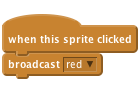

Paint Box
Level 3
The project creates a drawing tool for you to make your own art. You can change the colour of the line, clear the screen, make stamps and much more!

We’ll start with a pen that draws when you drag it around the Stage.
Make the pencil follow the mouse around the stage using the forever and go to mouse-pointer blocks.
```blocks
when FLAG clicked
forever
go to [mouse-pointer v]
end
```Now we want to use this pen sprite as an actual pen. If you look under the pen section you’ll see all sorts of drawing related blocks. The ones we’re initially interested in are pen down and pen up.
We want to use the mouse button to control the pen – whenever the mouse button is down the pen should be down, and when it is up the pen should be up. We can do this using an if... else and mouse down? blocks.
```blocks
when FLAG clicked
forever
go to [mouse-pointer v]
if (mouse down?)
pen down
else
pen up
end
end
```Click on the green flag.
Does the pen follow the mouse around? What happens if you hold the mouse button down and move the mouse? Don’t worry about the pen colour for now.
Eventually the screen is going to get pretty filled with scribbles. The clear block can be used to clear the screen.
```blocks
when FLAG clicked
clear
forever
go to [mouse-pointer v]
if (mouse down?)
pen down
else
pen up
end
end
```Click on the green flag.
Does your drawing disappear when you click on the green flag?
Rather than having to stop and start the whole project, let’s add a button that
clears the drawing. It will do that using the clear block.
Give the clear sprite this simple script:
```blocks
when this sprite clicked
clear
```Click on the green flag.
Does the clear button clear all your drawing?
So far, we can only draw blue lines. Let’s draw with some different colours! We’ll add some sprites at the bottom of the frame. The sprites will look like coloured buttons. If we click on a button, it will change the colour of the line we draw. So we know what colour we’re using, the button will also change the colour of the pencil sprite.
When the red sprite is clicked, it should broadcast the message red.

Yes, that’s all it does. The hard work is done by the pencil.
In the pencil, upload a new costume, resources/red-pencil.png. Set the costume centre to be the tip of the pencil as you did for the original costume.
set pen color to block).Hint: if you click on the coloured square in the set pen color to block, you can
click the red button sprite to make sure it’s the same colour.
```blocks
when I receive [red v]
switch to costume [red-pencil v]
set pen color to [#FF0000]
```Click on the green flag.
Start by drawing a line. Then click on the red selector sprite and draw some more. Does the pencil change costume? Does it now draw red? Does it draw from the tip of the red pencil?
Click on the green flag.
Do all the selector buttons work? Do they all change the pencil’s costume to the right colour? Do they all make the pencil draw in the right colour? Do all the costumes draw with the tip of the pencil?
You’ve probably noticed that you can draw all over the Stage, even in the border. We don’t want that to happen. We want to keep the drawing in the middle of the Stage. We can do this by making sure the pen isn’t allowed to leave the drawing area - the light grey part on the Stage.
Remember that Scratch defines points using x and y axis. Our drawing area lies between 230 and -230 on the x-axis and 170 and -120 on the y-axis. We can use these values in an if block, making sure the mouse is inside this area before we move the pencil to it.
To do this, wrap a new if block around your existing goto...if block, and inside this new if check for the following:
mouse y is greater than -120 and mouse y is less than 170
and mouse x is greater than -230 and mouse x is less than 230
Note to do this you’ll need to use multiple and operator blocks, one for the two mouse x conditions, one for the two mouse y conditions and a final one to join these all together:
```blocks
clear
forever
if <<(mouse y) > (-120)> and <(mouse y) < (170)> and <(mouse x) > (-230)> and <(mouse x) < (230)>>
go to [mouse-pointer v]
end
end
```Since we can’t draw outside of the drawing area, we could hide the pencil tool whenever we leave it. To do this, replace the if with an if else block. Keep the same condition for the if, and show the pencil if it’s true, otherwise hide it.
```blocks
when FLAG clicked
clear
forever
if <<(mouse y) > (-120)> and <(mouse y) < (170)> and <(mouse x) > (-230)> and <(mouse x) < (230)>>
go to [mouse-pointer v]
show
if (mouse down?)
pen down
else
pen up
end
else
hide
end
end
```Click on the green flag.
Can you still draw inside the drawing area? Can you draw outside the drawing area? What happens to the pencil when you leave the drawing area and go back in?
Drawing lines is great, but there are times when you’ve made a mistake and you want to rub it out. We can do that with a new pencil tool that draws in grey (the same colour as the background).
Add a new button-sprite to the Stage to select the eraser. Use the resources/eraser.png costume for it, making it smaller to fit at the bottom of the Stage. It should work the same as the other colour-selection buttons, sending an eraser message.
The pencil sprite should respond to the eraser message by switching the pen colour to grey (remember you can use the picker to select the colour of the background). It will also need a new costume to represent the eraser tools: use the same resources/eraser.png costume. Remember to reset the costume’s centre.
Click on the green flag.
Does the eraser rub out lines? Does it work right up to the edges? Can you switch between eraser and pencil tools?
The next thing to add is a stamp tool, to stamp small pictures on the drawing.
broadcast stampvariable pencil mode for this sprite only. We’ll use this variable to keep track of whether or not we are drawing or stamping.pencil mode variable to false.pencil mode to true.pencil mode = true we should use the existing pen down, if not we should stamp instead.Click on the green flag.
Does the stamp tool work correctly?
What happens when you switch back to one of the normal pencil tools?
Well done, you have completed the basic steps for this project.
Try these challenges!
Let’s add a special pencil that paints in rainbow colours. It’s something that you can’t do with ordinary pens and pencils, so it’s nice to show off how drawing on a computer allows you do to different things. The secret to making it work is the change pen colour by block.
First, add the rainbow tool selection sprite and the rainbow tool costume to the pencil sprite:
broadcast rainbow when clicked.You need to build a script that will change the pen colour many times a second to give the rainbow effect (I found that changing it by 5 every 0.05 seconds works well, but you should try out different values). The timer Scratch card shows how you can make something change every so often. Use a change pen colour by 5 block instead of a change timer by -1 block inside the loop.
You also need to control that loop so that it only changes the pen colour when you’ve selected the rainbow pencil, otherwise all the pencils will have a rainbow effect! You can do this in a very similar way to how the pencil sprite changes between pencil and stamp modes. You need to create a variable called rainbowChange that has the value true when you want the rainbow effect and false otherwise. Every time the pencil responds to a tool-selection message, it should set the value of rainbowChange accordingly.
Use what you learnt from the stamp step above to control the rainbow effect. The scripts that respond to the tool-selection messages will set two variables each: pencilMode and rainbowChange.
Click on the green flag.
Does the rainbow tool work correctly?
What happens when you switch back to one of the normal pencil tools?
Rather than using the tool-selection sprites at the bottom of the stage, you can use the keyboard to select the different tools.
You can use the ifkey [] pressed blocks to respond to the keyboard. For each key you want to use, you’ll need another ifkey [] pressed, which sends the same message as the respective tool-selection sprite does when its clicked. Add these scripts to the stage.
I used these shortcuts:
Click on the green flag.
Do all the tools get selected with the correct keyboard shortcuts? Does each of the tools work correctly when you select it with keyboard? Are the correct tools still selected with the tool-selection sprites on the stage?
Another feature that most drawing packages have is the ability to change the size of the pencil. Let’s add that.
There’s one complication, though, which is that sometimes the resizing needs to change the pen size and sometimes it needs to change the pencil sprite’s costume size. It depends on whether you’re using a pencil or a stamp.
Create two new tool-selection sprites, called bigger and smaller. They should have the resources/bigger-selector.gif and resources/smaller-selector.gif costumes and should send the bigger and smaller messages.
The pencil sprite can respond to the messages by changing either the pen size by 1 or the costume size by 10, depending on the value of pencil mode (use an if-else block, similar to how the sprite chooses between putting the pen down or stamping)
Don’t forget the keyboard shortcuts for the bigger and smaller tools. I used the up and down arrows.
What you should have noticed is that changing the size of the stamp also changes the size of the pencil on-screen when you change to that tool.
To stop that, you need to set the size to 100% every time you change to a pencil tool, so that the tools look the right size.
To make it even better, have the stamp remember what size it was before you selected the pencil and go back to that size when you select the stamp tool again. The easiest way to do that is to create a new variable called stampSize, that is updated with the current size every time the stamp is resized. When the stamp tool is selected, it can set its size from the contents of this variable.
Click on the green flag.
Do the size controls work for the pencils?
What happens if you switch to the stamp, change the size and then switch back to a pencil?
Well done you’ve finished, now you can enjoy the game!
Don’t forget you can share your game with all your friends and family by clicking on Share on the menu bar!